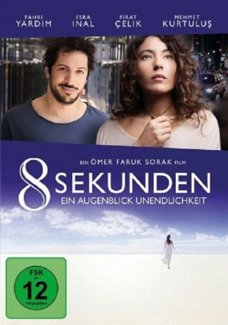
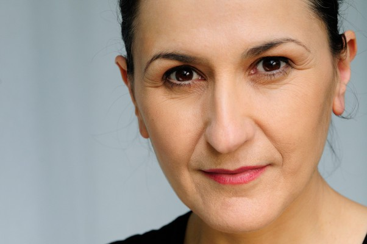
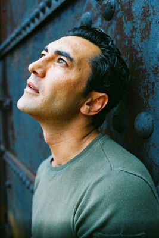

#6156 8 Sekunden - Ein Augenblick Unendlichkeit
 
 IMDB-Wertung: 6.6 / 10
IMDB-Wertung: 6.6 / 10  Metascore: 0
Metascore: 0 
Esra (Esra Inal) lebt in zwei Welten. In ihrem Alltagsleben ist sie eine junge deutsch-türkische Frau mit viel Temperament. Esra liebt ihre Familie, aber fühlt sich in ihren Beziehungen eingeengt und lehnt sich gegen die Regeln auf. Sie hat das Gefühl, dass ihr etwas fehlt, dass es mehr geben muss als das, was sie bisher kannte - eine Liebe, die grenzenlos ist. In ihrer zweiten Welt, in die sie eintaucht, wenn sie schläft, versucht sie die Identität eines rätselhaften Mannes zu entschlüsseln, der sie in ihren Träumen besucht. Ist er bei ihr, fühlt sie sich geborgen. Langsam dringt sie in eine ganz neue Welt vor. Aber je mehr sie versucht, ihre Träume zu verstehen, umso mehr beeinflussen sie ihr Leben. Während sie im wirklichen Leben immer mehr Widerständen begegnet, kommt sie im Traum ihrem Geheimnis immer näher. Aber was wäre, wenn ihre Träume und die Realität nie voneinander getrennt waren, und das Geheimnis in Wirklichkeit allen offen steht? Inspiriert von einer wahren Geschichte.
Jahr: 2015
Dauer: 115 Minuten
FSK: 12
Land: Türkei Studio: Warner Bros.Tonspuren: DD2.0 - ,
Untertitel:
Auflösung: 1080p (1920x808) Größe: 4730 MB
Genre: Drama, Fantasy, Liebe, Biographie
Regisseur: Ömer Faruk Sorak, Birkan Pusa
Drehbuch: Matt Venne
Soundtrack:
Darsteller:
- Batur Belirdi als Brother-in-law
 Leonie Benesch als Helen
Leonie Benesch als Helen- Grit Boettcher als Ms. Lobatski
-  Siir Eloglu als Hayat
- Yilmaz Erdogan als Dervis
 Ralph Herforth als Michael
Ralph Herforth als Michael- Salih Kalyon als Mikail
-  Mehmet Kurtulus als Sami
- Don Miguel Ruiz als Don Miguel
- Katharina Weithaler als Dr.Anna Klein
 Milton Welsh als Romanian 1
Milton Welsh als Romanian 1 Fahri Yardim als Mo
Fahri Yardim als Mo- Firat Çelik als Tayfun
- Esra Inal als Esra
- Ceylin Adiyaman als Little Esra
- Gulay Baltaci als Havva
- Ilknur Boyraz als Aylin
- Beyti Engin als Hoca
- Curtis Erhart als Don Miguel
- Demet Gül als Sevgi
- Sema Poyraz als Melek
- Aylin Selcuk als Young Aylin
- Axel Stein als Dedective
- Mascha Tokareva als Laura
- Constantin von Jascheroff als Tom
- Seher Devrim Yakut als Teyze
- Haydar Zorlu als Brother-in-law
Datei: X:\2015(A-F)\8 Sekunden - Ein Augenblick Unendlichkeit (2015, FSK12, 1920x808).mkv seit 09.05.2017
Festplatte: HD 2015(A-Z)
 Es gibt insgesamt 143 Filme in der Gruppe '2015(A-F)'
Es gibt insgesamt 143 Filme in der Gruppe '2015(A-F)'